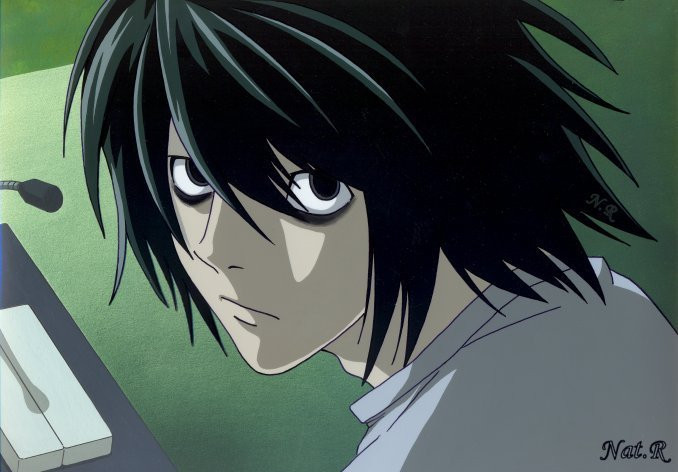

INICIO
CAPITULOS
DEATH NOTHE PERSONAJES
LIGHT YAGAMI
MISA AMANE
RYUK
REM
L. LAWLIET
NATHAN RIVER
MICHAEL KEEHL
KIYOMI TAKADA
TERU MIKAMI
Nayeli Ramírez Juárez todos los derechos reservados ©2015
|
L LAWLIET

Nació el 31 de octubre de 1979. Es un brillante detective privado que
ha descifrado los casos más complicados de todo el mundo y tiene la intención de atrapar a Kira, sus formas de deducir las cosas
son brillantes, es conocido en diversos países por trabajar para ellos, pero lo que nadie sabe ni conocen es su verdadera identidad,
ni su rostro. Es caracterizado porque tiene el cabello negro y muy revuelto, Sus ojos son cafés y sus pupilas se encuentran
dilatadas a todo momento, Su piel es tan blanquecina que adopta tonos cadavéricos, come muchos dulces, andar siempre descalzo,
camina y se sienta encorvado, cuando le llaman toma el teléfono de una manera extraña, cuando no está serio es bastante gracioso.
L es un inadaptado social ya que le cuesta relacionarse con la gente hasta que conoce a Light, nunca se le vio en compañía de
un amigo pero siempre considero a Light uno de sus mejores amigos. No tiene tacto al hablar, por lo que puede llegar a herir
aa las personas con su extrema sinceridad. L siempre sospecha de que Light es el primer Kira y Misa el segundo, devido a esto él
muere a manos de Rem que estabá manipulada por Light para salvar la vida de Misa.
|